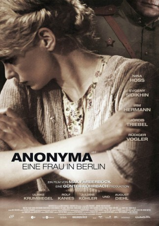

#6441 Eine Frau in Berlin - Anonyma
Alternativ: The Downfall of Berlin: Anonyma (Englischer Titel)
 
 IMDB-Wertung: 7.1 / 10
IMDB-Wertung: 7.1 / 10  Metascore: 0
Metascore: 0 
Der Film erzählt die Geschichte von Anonyma einer Frau, die bis zu ihrem Tod anonym geblieben ist. Es sind ihre eigenen Aufzeichnungen im Berlin nach der deutschen Kapitulation im Frühjahr 1945. Der Krieg ist längst verloren, die Bombardements der Engländer und Amerikaner aus der Luft werden abgelöst von der Eroberung der Stadt am Boden. Straßenzug für Straßenzug arbeiten sich die russischen Truppen vor und lassen die deutsche Bevölkerung ihren Hass spüren.Um zu überleben, arrangiert sich Anonyma mit den Besatzern, denen sie und ihre Mitbewohner in ihrem Mietshaus hilflos ausgeliefert sind. Für sie, ebenso wie für viele andere Frauen, beginnt eine Zeit voller Demütigungen, Grausamkeiten und Vergewaltigungen. Der Film bebildert ein emotionales und ergreifendes Stück Geschichte, über das lange geschwiegen wurde. Er porträtiert eine Frau jener Zeit, die den Mut hatte, für viele zu sprechen, die das gleiche Schicksal ereilte.
Jahr: 2008
Dauer: 126 Minuten
FSK: 12
Land: Deutschland Studio: Constantin FilmTonspuren:
Untertitel:
Auflösung: 1080p (1920x816) Größe: 6912 MB
Genre: Drama, Krieg, Geschichte, Biographie
Regisseur: Max Färberböck
Drehbuch: Max Färberböck
Soundtrack:
Darsteller:
 Nina Hoss als Anonyma
Nina Hoss als Anonyma- Evgeniy Sidikhin als Major Andreij Rybkin
 Irm Hermann als Witwe
Irm Hermann als Witwe Rolf Kanies als Friedrich Hoch
Rolf Kanies als Friedrich Hoch Jördis Triebel als Bärbel Malthaus
Jördis Triebel als Bärbel Malthaus Juliane Köhler als Elke
Juliane Köhler als Elke Eva Löbau als Frau Wendt
Eva Löbau als Frau Wendt Sebastian Urzendowsky als Junger Soldat
Sebastian Urzendowsky als Junger Soldat August Diehl als Gerd
August Diehl als Gerd Rosalie Thomass als Greta Malthaus
Rosalie Thomass als Greta Malthaus Sandra Hüller als Steffi
Sandra Hüller als Steffi- Konstantin Vorobyov als Vierzigjähriger
- Anatoliy Dzivaev als
 Waléra Kanischtscheff als Russian soldier , uncredited
Waléra Kanischtscheff als Russian soldier , uncredited Olgierd Lukaszewicz als Buttermann , uncredited
Olgierd Lukaszewicz als Buttermann , uncredited Rüdiger Vogler als Eckhart
Rüdiger Vogler als Eckhart- Ulrike Krumbiegel als Ilse Hoch
- Roman Gribkov als Anatol
- Samvel Muzhikyan als Andropov
- Aleksandra Kulikova als Masha
- Viktor Zhalsanov als asiatischer Rotarmist
- Oleg Chernov als Erster Vergewaltiger
- Anne Kanis als Flüchtlingsmädchen
- Maria Hartmann als Likörfabrikantin
- Katharina Blaschke als Buchhändlerin
 Aleksandr Samoylenko als Petka
Aleksandr Samoylenko als Petka- Evgeniy Titov als Volodja
- Sergey Galich als
- Igor Yatsko als Erster Russe im Keller
- Dmitriy Bykovskiy-Romashov als Sibiriak
- Eva Maria Keller als
- Romuald Makarenko als Adjutant
- Erni Mangold als Achtzigjährige Frau
- Catharina Schuchmann als Frau Binder
- Hermann Beyer als Dr. Wolf
- Ralf Schermuly als Buchhändler
- Kirill Ulyanov als Dichter
- Philipp Chevychelov als
- Ilja Pletner als
- Aleksey Poluyan als Pockennarbiger Unterleutnant
- Igor Kleymenov als
- Isabell Gerschke als Lisbeth
- Tomasz Leszczynski als Grisha
- Louis Schuchmann als Felix
- Hans-Peter Abts als Stiefelrusse , uncredited
- Dimitri Bilov als Pfannenrusse , uncredited
- Wolfgang Ceczor als Deutscher Offizier , uncredited
- Andreina de Martin als Belästigte Frau , uncredited
- Lili Färberböck als Fünfzehnjährige , uncredited
- Maksim Konovalov als Zündapp Junge , uncredited
Datei: X:\2008(A-F)\Frau in Berlin - Anonyma, Eine (2008, FSK12, 1920x816).mkv seit 22.06.2017
Festplatte: HD 2007(A-Z)-2008(A-F)
 Es gibt insgesamt 66 Filme in der Gruppe '2008(A-F)'
Es gibt insgesamt 66 Filme in der Gruppe '2008(A-F)'